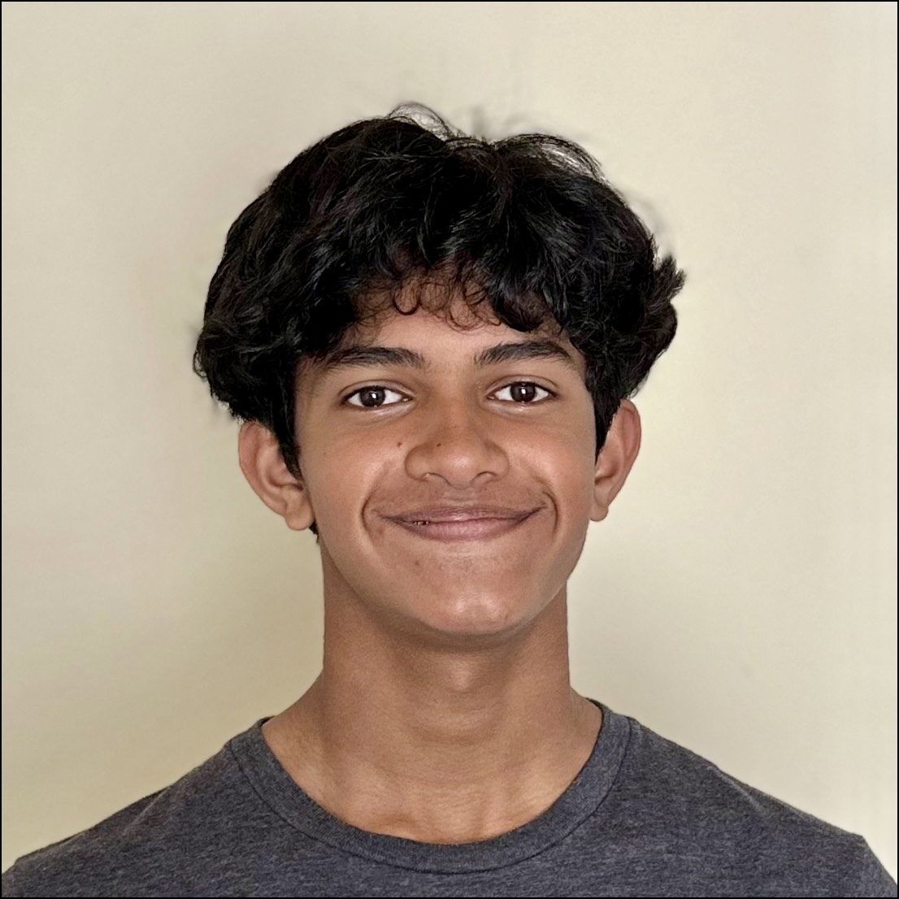

Introduction
I am Nilay Arangil, a sophomore at Shadow Creek High School in Pearland, Texas, with a deep passion for programming, coaching, volunteering, and tennis. My journey in technology and community service has shaped my identity, allowing me to make a meaningful impact both locally and globally.
Technology and Coaching
From an early age, I developed a strong interest in programming, which led me to explore multiple technologies, including Python, C#, Raspberry Pi, and web development. Currently, I offer coaching in these areas, mentoring students to enhance their coding skills and technical expertise.
In 2022, I founded HoustonMentors.com, a non-profit website dedicated to providing coaching and mentorship to student communities across Houston. This initiative expanded internationally through the Malayalee Engineers Association, where I had the privilege of mentoring engineering students at Kannur Engineering College in India. My role included guiding students through advanced Python concepts and assisting them with their final-year project—developing a Raspberry Pi-based crop protection system that utilized sensors and Python programming for smart agricultural solutions.
Each summer, I dedicate six weeks to volunteering with the Global Organization for Divinity, conducting programming courses to empower young learners with technical skills.
Community Service and Leadership
Beyond technology, I am committed to giving back to the community through various non-profit organizations. As the Pearland Regional Officer for FirstRaquet, I contribute to efforts that support underprivileged young athletes in Angola. Our organization organizes tournaments, collects new and used tennis equipment, and ships them to Angola, promoting the sport among those with limited access.
Additionally, I actively volunteer with organizations such as the Houston Food Bank, Guruvayur Temple, and Namadwar, participating in food packing and distribution to help families in need across the Houston area.
Tennis and Extracurricular Activities
Tennis has been an integral part of my life. I represented my school in singles tennis and was part of the team that secured the district championship in 2022. Currently, I am a varsity tennis player for Shadow Creek High School, continuing to compete at a high level while balancing my academic and extracurricular commitments.
Music and Personal Interests
Apart from my academic and athletic pursuits, I have a strong passion for music. I play both the piano and violin and was a part of my middle school’s varsity orchestra, where I had the opportunity to perform at various concerts and competitions.
Looking Ahead
I am always seeking new ways to merge technology, mentorship, and community service to make a lasting impact. Through coaching, volunteering, and innovation, I strive to inspire and empower others. Stay connected for updates on upcoming courses, projects, and initiatives—let’s explore the limitless possibilities of technology and service together!
Nilay Arangil